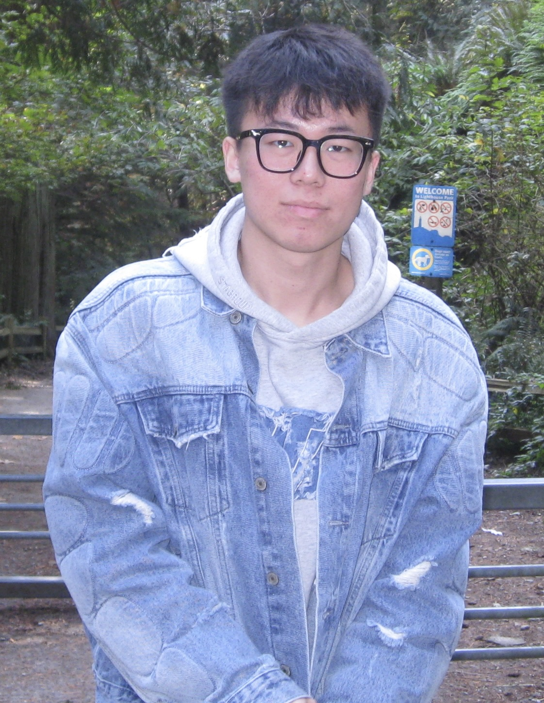

Reliable reasoning
When should a model challenge a question’s assumptions? I study false presuppositions in question answering and the tradeoff between correcting false assumptions and answering valid questions.
Question answering · RobustnessComputer Science · University of British Columbia
Making language & speech systems
more efficient and reliable.
I’m an M.Sc. student in Computer Science at UBC, advised by Vered Shwartz and Hila Gonen in the Natural Language Processing Lab. I enjoy open-ended problems and elegant solutions at the intersection of utility, reliability, and efficiency.

01 / Research
When should a model challenge a question’s assumptions? I study false presuppositions in question answering and the tradeoff between correcting false assumptions and answering valid questions.
Question answering · RobustnessI investigate how transformer, state-space, and hybrid models learn from context, using behavioral probing and interventions to understand the roles of retrieval and contextual understanding.
Interpretability · Model architecturesI explore efficient multilingual speech synthesis and voice anonymization for low-resource languages, with attention to speaker privacy and Indigenous language education.
Speech synthesis · Low-resource learning02 / Selected writing
Shenran Wang, Vered Shwartz, and Hila Gonen
arXiv · Under review
Shenran Wang, Timothy Tin-Long Tse, and Jian Zhu
Shenran Wang, Aidan Pine, and Mengzhe Geng
Short Papers
Shenran Wang, Changbing Yang, Mike Parkhill, Chad Quinn, Christopher Hammerly, and Jian Zhu
✧ Best Theme Runner-Up Paper Award
03 / Background
My work connects language understanding, model behavior, and speech technology. Alongside research, I enjoy turning ideas into working systems and helping others find their research direction.
2025 — 2027 (expected)
University of British Columbia
Advised by Vered Shwartz & Hila Gonen
2020 — 2025
University of British Columbia
Research advisor: Jian Zhu
Summer 2025
National Research Council Canada
Voice anonymization for low-resource text-to-speech
March — September 2023
SAP · HANA Tooling Team
Shipped three production features for database management software.
Currently exploring / Since September 2026
Mentoring two undergraduate researchers on efficient architectures for real-time speech interaction.
Leading a graduate student team exploring how to simulate users across different professional settings.
04 / Get in touch